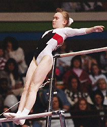

Svetlana Tarasevich (BLR)
1996 Olympian

Svetlana was born on August 14, 1979.
Competition Results
1994
Blume Memorial: 8th AA
European Championships: 16th AA, 4th UB
USA-BLR-CHN Meet: 6th AA
World Championships (Dortmund): 6th Team
1995
American Cup: 11th AA (prelims)
Intl. Mixed Pairs: 10th Team
Massilia Cup: 1st V
World Championships: 8th Team
1996
Olympic Games: 6th Team
1997
SUI-CHN-BLR Meet: 5th AA
World Stars: 8th UB
1999
University Games: 4th Team, 7th FX
World Championships:
This page was created on November
20, 2005.
© Gymn Forum